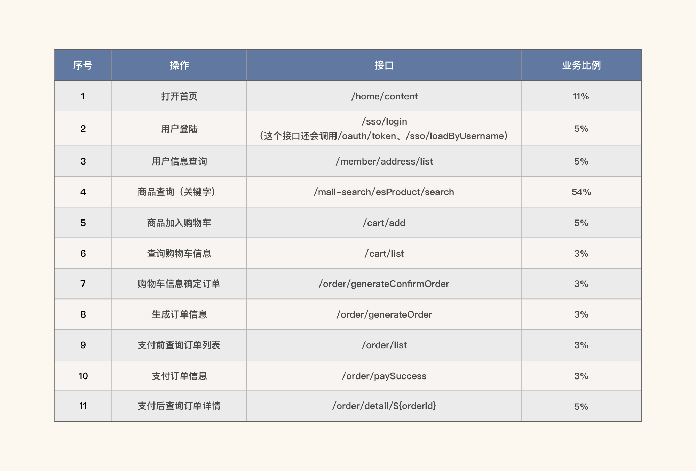
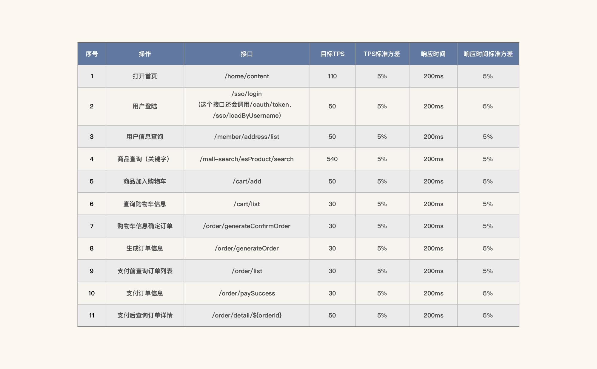
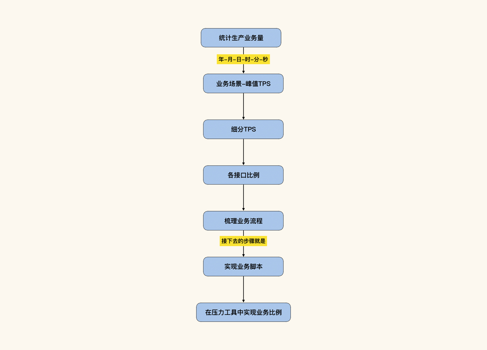
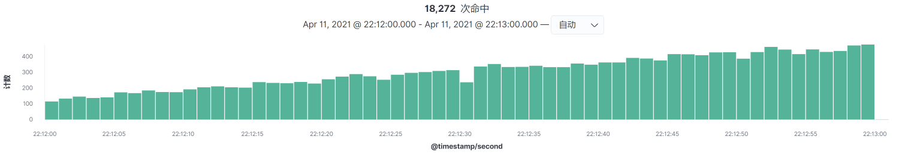
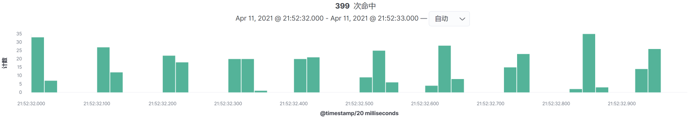

- 00 开篇词 打破四大认知局限，进阶高级性能工程师.md.html
- 01 性能工程：为什么很多性能测试人员无法对性能结果负责？.md.html
- 02 关键概念：性能指标和场景的确定.md.html
- 03 核心分析逻辑：所有的性能分析，靠这七步都能搞定.md.html
- 04 如何构建性能分析决策树和查找瓶颈证据链？.md.html
- 05 性能方案：你的方案是否还停留在形式上？.md.html
- 06 如何抽取出符合真实业务场景的业务模型？.md.html
- 07 性能场景的数据到底应该做成什么样子？.md.html
- 08 并发、在线和TPS到底是什么关系？.md.html
- 09 如何设计全局和定向监控策略？.md.html
- 10 设计基准场景需要注意哪些关键点？.md.html
- 11 打开首页之一：一个案例，带你搞懂基础硬件设施的性能问题.md.html
- 12 打开首页之二：如何平衡利用硬件资源？.md.html
- 13 用户登录：怎么判断线程中的Block原因？.md.html
- 14 用户信息查询：如何解决网络软中断瓶颈问题？.md.html
- 15 查询商品：资源不足有哪些性能表现？.md.html
- 16 商品加入购物车：SQL优化和压力工具中的参数分析.md.html
- 17 查询购物车：为什么铺底参数一定要符合真实业务特性？.md.html
- 18 购物车信息确定订单：为什么动态参数化逻辑非常重要？.md.html
- 19 生成订单信息之一：应用JDBC池优化和内存溢出分析.md.html
- 20 生成订单信息之二：业务逻辑复杂，怎么做性能优化？.md.html
- 21 支付前查询订单列表：如何分析优化一个固定的技术组件？.md.html
- 22 支付订单信息：如何高效解决for循环产生的内存溢出？.md.html
- 23 决定容量场景成败的关键因素有哪些？.md.html
- 24 容量场景之一：索引优化和Kubernetes资源分配不均衡怎么办？.md.html
- 25 容量场景之二：缓存对性能会有什么样的影响？.md.html
- 26 稳定性场景之一：怎样搞定业务积累量产生的瓶颈问题？.md.html
- 27 稳定性场景之二：怎样搞定磁盘不足产生的瓶颈问题？.md.html
- 28 如何确定异常场景的范围和设计逻辑？.md.html
- 29 异常场景：如何模拟不同组件层级的异常？.md.html
- 30 如何确定生产系统配置？.md.html
- 31 怎么写出有价值的性能报告？.md.html
- 我们这个课程的系统是怎么搭建起来的？.md.html
- 结束语 做真正的性能项目.md.html
- 捐赠
23 决定容量场景成败的关键因素有哪些？
你好，我是高楼。
从这节课开始，我们就要进入到容量场景的分析了。
在当前的性能市场中，如果你让一个性能人员设计一个容量场景，他可能不知道应该怎么去做，你自己可能也会有一些茫然。因为设计容量场景需要的前提条件太多了，很多人都会觉得无从下手。
虽然我们前面在第5讲中已经描述了容量场景的大致内容，但仍然不够详细，并且可能不足以引起你的重视，而容量场景的重要性又让我们不能轻视它。所以，这节课我将带你来看一下容量场景中的各个关键点，以便让你在设计和执行容量场景时，不会那么盲目。
容量场景目标
首先是目标，你要记住，容量场景一定要有目标。如果做容量场景没有目标，那就是没有结束时间点的。因此，我在写性能方案那一讲时，特别提到了性能项目的目标。
关于容量场景，我写的目标是“达到系统的最佳运行状态”。而这样的目标很显然在一个项目中是不够具体的。如果你想更具体，就需要把一个系统的最大容量很具体地写出来。
请你注意，在很多性能项目中，由于给出的容量场景目标不够具体，或者是存在“只给出最大TPS而不给业务模型”这样的流氓需求，导致容量场景的执行犹如无根之水，想往哪流往哪流，这肯定是不行的。
那一个容量场景的目标怎样才算具体呢？我给你举一个例子，比如说“系统容量要求达到1000TPS”，这个1000TPS是一个总值，它还会被细分到各个业务上，这就用到了对应的业务模型。那么这个“1000TPS”就是我们的总体指标，也就是容量场景的目标。而它对应的业务模型就应该是这个样子的（下表为示例）：

但是，这里只有比例，没有指标，也是不行的，因为没有结束的标准。所以，我们还要对容量目标有一个精准界定（下表为示例）：

这样，我们不仅有了比例，还有了优化和项目结束的目标，这样的容量场景目标就非常具体了。
业务模型
刚才我们讲到，容量场景要在一个确定的业务模型下执行，同时我们也在上一段落给出了业务模型的示例。
关于业务模型，我要跟你明确一下：我们在执行容量场景时，要包括所有的并发业务（你可以用接口拼出业务），在一个业务系统中，只有包括了所有的业务接口，才是真正的容量场景。
并且，业务模型的比例要符合生产中的真实业务场景（具体请看第5讲中的业务模型和性能指标部分），也就是说，在容量场景中，业务模型一定要覆盖生产环境中的业务峰值，并且还要覆盖生产环境中的最大资源使用率峰值。
之前我看到有些人直接把每个接口都做了性能测试，然后一个性能项目就算是结束了。这是不合理的，因为一个系统里的接口都是并行的，不会都是串行。
既然业务接口是并行的，那必然要有前后执行的关系，也要有比例关系，这就涉及到了业务模型的来源。
我们在第6讲说过，要想抽取出符合真实业务场景的业务模型，正常的逻辑应该是：先把生产环境中的业务做统计，并给出相应的业务比例，然后把业务比例在压力工具中设置好，并保证结果中的比例和统计出的业务比例一致。
这是对应的流程图，希望你还记得：

请你记住，我们现在努力让所有的业务模型都符合生产模型，是为了在做容量场景时，可以对“生产峰值是否可以支持业务”这个问题给出一个明确的答案。所以，业务模型的来源是至关重要的。
同时，也有人说了，我拿不到生产的数据来做统计怎么办？我觉得，这个真的不是技术问题。如果你的权限不够，你可以向上汇报；如果是公司的系统不支持，你可以协调公司的相关人想办法；如果你又没有数据又没权限又只知道报怨，那只能说你没努力过；如果你努力了，也得不到结果，那就是你公司的相关人，对性能没有足够的认识。
性能行业发展到现在，“业务模型要从生产环境中统计出来”这一点仍然没有在每个公司中深入人心，这也是行业发展的一个悲哀了。
有人说，我这是新系统，没有生产数据怎么办？这也不是完全没招。
首先，每个项目的出现肯定是有业务需求的。如果市场有同类型的业务系统，你可以去找同类型的业务系统数据来做借鉴。通常情况下，每个项目的业务人员，都有同类型业务的经验，让他们给出来就可以。记住，他们只是给你业务需求，技术需求还是需要性能项目的相关人员细化下去。
如果市场上没有同类型的业务系统，也没有可借鉴的数据，我想你可以尝试一下我的做法：在我经历过的项目中，都会有一个项目试运行阶段。因为不敢确定这个系统上线后会是什么样子，所以，我们会先试运行一段时间，以便作出相应的调整。而试运行的数据，就可以拿来借鉴。
如果你说，我们这系统就是没有同类型的系统数据借鉴，也没有试运行阶段，怎么办？那我只能说，你随便压吧，怎么压都对，怎么压也都不对。
现在有一些生产流量复制的工具，它们的目标之一就是为了解决业务模型和生产一致的问题，这是行业正在做的努力。不管我们用什么样的方式，流量复制也好，业务模型统计也好，都是合理的思路和手段。
除此之外，当业务模型具体要配置到容量场景中时，还有一个问题是经常被问到的，那就是怎么用压力工具实现具体的业务比例。关于这一点，你可以在第5讲中得到答案：如果你是用 JMeter 的话，可以使用 Throughput Controller 来控制业务比例。当然，如果你使用的其他工具也有同样的功能，也是可以的。
关于业务模型能不能真正落实到容量场景中，还有一个动作至关重要，那就是在容量场景执行结束之后，你要把场景的结果和业务模型中的比例做环比。如果一致，那就是有效的容量场景；如果不一致，那就从头再来。这个动作你一定不要忘记。
数据量级
关于容量场景中的数据量级，我希望你记住：容量场景中使用到的参数，尽量不要通过造数据的方式实现。因为我们在容量场景中会用到所有的接口，而这些接口是有上下的业务逻辑关系的，所以，我建议你最好根据业务逻辑做参数传递，而不是通过造数据来做参数化。如果实在没办法实现，再考虑造数据。
同时，我们要考虑好容量场景中需要用到的数据量级。请参考第5讲中的数据准备部分和第7讲中的具体描述。在这里，我只强调几个关键点：
容量场景的参数化数据，一定要和生产中实际用户的使用规则与数据量级保持一致。这一点我强调过很多次，但是仍然有人问我：参数化数据是不是可以用少量的数据，来实现生产级的压力。在这里，我义正言辞地再说一次：不可以！
铺底数据一定要通过计算做相应的缩减，最好能和生产一致。这个缩减怎么来做？我建议你做一下基准场景来比对。怎么比对呢？在压力级别和数据量相同的情况下，统计测试环境和生产环境中的资源使用等各类计数器，看看有什么区别。
关于数据这一块，我主要是这两个忠告，希望你能记住。
监控设计
我们在第9讲中已经详细描述过全局和定向监控设计策略，这里我就不再重复了。不过，我还要再啰嗦几点，希望能引起你的重视：
首先，全局监控的所有计数器都要和项目级的性能分析决策树对应。关于这一点，理解起来很容易，但是不一定能轻易做到，因为每个监控工具都不够全面，或者说很多监控工具的设计理念都各不相同。
如果你所在的企业，系统是固定的，并且在做不断的演进，那你最好能有自己的监控平台设计理念。我们在第9讲中也说到全局监控来自于架构分析，有了这个逻辑，你才能明白为什么性能和架构的相关性会这么大。
其次，一定要在有了性能瓶颈的方向判断之后再做定向监控。因为分支实在太多，而一开始就蒙定向监控的方向，基本上是蒙不对的。
再次，关于监控工具的选择，请你不要纠结，只要能准确收集计数器的值就可以了，没有哪个工具是必须使用的。
最后一点，在容量场景中，所有的涉及到的业务组件，都要有全局监控的“分段-分层”的覆盖。
在性能分析的具体操作过程中，你会发现，我们对计数器的理解程度和方向的判断有着绝对的关系，比如说，当我们看到us cpu高，就自然地想到要去看用户级的应用栈到底在执行什么代码；当我们看到sy cpu高，首先想到的是去查syscall到底是被谁调用的。
因此，监控这部分的难点在于理解计数器，而要理解计数器就必须理解技术组件的原理。
当你看到一个计数器的值，却不知道下一步要干啥的时候，说明你没有理解这个计数器，这时候你就得补相关的知识了。就像有些不会做饭的人会问，是水开了再打蛋，还是凉水时就打蛋呢？你想想，凉水打蛋的效果是不是惨不忍睹？
压力策略
我们再来看容量场景中的压力策略。同样是在第5讲中，我强调了在性能场景的压力策略中，有两个关键词：递增、连续。在容量场景中，必须要做到这两点。
可能有人会问，连续比较容易理解，那递增是怎样一个递增法呢？这一点，我们在第10讲的基准场景中就有过描述，我也做过相应的压力线程的计算，在这里我就不重复了。如果你也有类似的疑问，建议你再详细回顾一下。
我要提醒你的是，容量场景中的压力线程可以没有明显的阶梯，但是一定要实现递增。为什么？你想想在生产场景中，真实的用户量级有没有可能一下子就上到峰值用户量级？很显然，这是不现实的嘛！
那如果实现了递增和连续的话，我们在服务端查看的时候，会是什么样的请求趋势呢？我给你一张图感受一下：

从这个图中，你就可以看到压力是在持续递增的，这才是生产的样子。
当然，如果你是为了找瓶颈，想尽快把压力发上去，也可以直接上大压力。当然，这样的场景不是做为结论场景使用的，我们只在性能分析过程中使用一下。
在容量场景的压力策略中，有一个概念经常被讨论到，那就是：集合点。很多人认为它非常有用，但在我看来这并不符合真实的生产场景。
那集合点到底要不要？
有人会说，为了模拟有多个用户同时操作，用集合点不是挺合理的吗？那我就要问一个问题了：压力工具的集合点是在哪里集合的？是在服务端集合的吗？显然不是吧，集合点只能在压力工具这一端集合。而集合的请求经过了CPU的争抢、网络中断的切换、网络传输的快慢、协议的转换等等动作之后，到服务端还集合吗？
再退一步讲，即便在服务端能集合了，服务端能处理超过自身能力的请求数吗？这显然不能吧。
光打嘴仗没有用，我还是放一张图让你感受一下：

这张图就是我在同样的场景中加了集合点之后，统计了服务端的请求日志，然后细化到以20毫秒为粒度看到的结果。你看，请求的趋势其实是断断续续的，对吧？这已经充分说明了“集合点在服务端的表现到底是怎样的”这个问题。
知道了问题的答案，再结合你的具体项目，你可以再仔细考虑一下，你需要的是不是这样的集合点。
启动条件
在第5讲中，我们提到过启动准则。在很多企业中，这个启动准则只是文档中的条目放在那里，在实际的项目执行中，根本就是毫不理会的。
启动准则其实和项目管理有关，在我经历过的性能项目中，要是不理会启动准则，那么性能项目消耗的过多时间，基本上都是由性能团队来背锅。
你想想，如果满足不了启动条件（比如未定版、功能未开发完成、架构和生产不一致、环境差异性等），就会导致边测边改，这是非常耗时间的，并且要重复做很多次。这样不仅增加了性能项目的成本，还降低了性能人员的价值，同时也体现出项目管理非常混乱的问题。
我能给你的建议是，最好把启动准则仔细看一下，在项目执行过程中，该谁背的锅就由谁来背。如果你愿意背，那就不要在意那些条目。
协调组织工作
最后，我们再来看容量场景的协调组织工作。在一些大型的项目中，容量场景涉及到的项目组会比较多，因此，我们要提前确定好每个项目的接口人，以免出现场景跑起来，系统却没人管的情况。
对于一个好的性能项目经理来说，要尽量避免性能执行人员去协调资源、督促解决性能问题这类的事情，因为从权限以及实际情况来看，性能执行人员去协调其他项目组是比较困难的，甚至会得不到支持。
总结
看到这里，你是不是觉得容量场景还挺复杂的？确实是这样。
容量场景不仅技术上有需要关注的点，在管理上，也有需要关注的点。我之所以对容量场景做这么多的描述，是因为容量场景对性能项目来说太重要了。当前的市场上经常提到的全链路压测，其实就是容量场景的一个具体场景。
因此，在这节课中，我把容量场景中重要的地方再给你捊了一遍，希望你能对容量场景重视起来。另外，我想给你一个小提醒，即便是所有的基准场景都执行得很好，容量场景也不是必然会顺畅，所以你要做好心理准备。
课后作业
这就是今天的全部内容，最后给你留两个思考题吧：
- 如果让你设计容量场景的监控策略，你会如何来做？请描述下你的设计逻辑。
- 在你的项目中，容量场景的压力策略是如何设计的？请描述下你自己的压力策略设计逻辑。
记得在留言区和我讨论、交流你的想法，每一次思考都会让你更进一步。
如果这节课让你有所收获，也欢迎你分享给你的朋友，共同学习进步。我们下一讲再见！
© 2019 - 2023 Liangliang Lee. Powered by gin and hexo-theme-book.